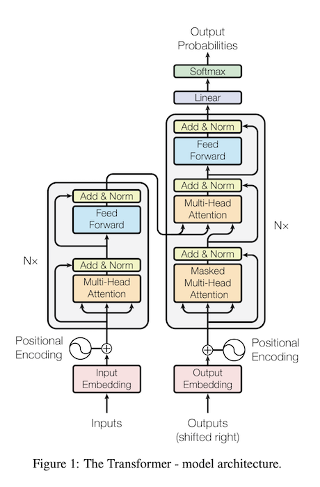

Part 1 - Core Concepts and Terminology in LLMs
Purpose of this series:
To understand what LLMs are
This space is moving fast and its valuable to get a mental framing on how to think about LLMs to better understand how to apply them in your projects and organization
It also sets context for a better understanding of new developments in LLMs
Our technical series are based on private reports we produce for our enterprise customers.
The intended audience for this series is:
Individual researchers, data scientists, and then also enterprise data teams as well
Series:
A large language model (LLM) is ….
LLMs are good at understanding written language in the form of plain text input. LLMs output plain text based on the plain text input.
GPT-3 and GPT-4 are examples of large language models.
ChatGPT is an example of an application built around a large language model (here: GPT-3.5, etc)
LLMs themselves DO:
LLMs do not:
Later on in this series we’ll introduce a generalized application architecture for LLM-based applications.
todo
https://www.theatlantic.com/technology/archive/2023/01/artificial-intelligence-ai-chatgpt-dall-e-2-learning/672754/
emergent abilities
https://www.quantamagazine.org/the-unpredictable-abilities-emerging-from-large-ai-models-20230316/
LLMs having their “stable diffusion”-moment
https://simonwillison.net/2023/Mar/11/llama/
“Rapid and pivotal advances in technology have a way of unsettling people, because they can reverberate mercilessly, sometimes, through business, employment, and cultural spheres. And so it is with the current shock and awe over large language models, such as GPT-4 from OpenAI.”
“It’s a textbook example of the mixture of amazement and, especially, anxiety that often accompanies a tech triumph.”
“It gives an answer with complete confidence, and I sort of believe it. And half the time, it’s completely wrong.”
“A very famous senior person said, ‘Radiologists will be out of business before long.’ And people stopped enrolling in radiology specialties, and now there’s a shortage of them.”
So what about these predictions that entire classes of employment will go away, paralegals, and so on? Is that a legitimate concern?
Brooks: You certainly hear these things. I was reviewing a government report a few weeks ago, and it said, “Lawyers are going to disappear in 10 years.” So I tracked it down and it was one barrister in England, who knew nothing about AI. He said, “Surely, if it’s this good, it’s going to get so much better that we’ll be out of jobs in 10 years.” There’s a lot of disaster hype. Someone suggests something and it gets amplified.
We saw that with radiologists. A very famous senior person said, “Radiologists will be out of business before long.” And people stopped enrolling in radiology specialties and now there’s a shortage of them. Same with truck driving…. There are so many ads from all these companies recruiting truck drivers because there’s not enough truck drivers, because three or four years ago, people were saying, “Truck driving is going to go away.”
https://spectrum.ieee.org/amp/gpt-4-calm-down-2660261157
LLMs and Artificial Intelligence — What is Artificial Intelligence?
todo
todo
https://exchange.scale.com/public/events/llm-prompt-engineering-and-rlhf-history-and-techniques-2023-03-09
https://lilianweng.github.io/posts/2023-03-15-prompt-engineering/
https://github.com/dair-ai/Prompt-Engineering-Guide
todo
sub-topics:
https://www.pinecone.io/learn/langchain-prompt-templates/
Since GPT-2 (Radford et al.) and GPT-3 (Brown et al.), we have seen that generative large language models (LLMs) pretrained on a general text corpus are capable of in-context learning, which doesn’t require us to further train or finetune pretrained LLMs if we want to perform specific or new tasks that the LLM wasn’t explicitly trained on. Instead, we can directly provide a few examples of a target task via the input prompt, as illustrated in the example below.
In-context learning is very useful if we don’t have direct access to the model, for instance, if we are using the model through an API.
todo

https://amatriain.net/blog/transformer-models-an-introduction-and-catalog-2d1e9039f376/
LLMs are implemented with Neural Networks using the Transformer architecture Transformers were introduced in 2017 they are an architecture of deep learning neural networks that worked well in natural language applications
great visual explanation of transformers: http://jalammar.github.io/illustrated-transformer/
Transformers can process long sequences of text and generate high-quality outputs for various language tasks, such as * text generation * question answering * translation
Noteworthy because:
Deep Learning is about using the correct architecture for a data type such that the architecture can perform automated feature engineering Transformers are a Deep Learning architecture for natural language Therefore, Transformer-based systems require no manual feature engineering
Transformers and LLMs rely directly on raw natural language text as the input
This is GPT’s rockstar application – a conditional generative model that creates near-human level quality text content.
https://platform.openai.com/docs/models
https://arxiv.org/abs/2005.14165
GPT-3 comes in eight sizes, ranging from 125M to 175B parameters. The largest GPT-3 model is an order of magnitude larger than the previous record holder, T5-11B. The smallest GPT-3 model is roughly the size of BERT-Base and RoBERTa-Base.
All GPT-3 models use the same attention-based architecture as their GPT-2 predecessor. The smallest GPT-3 model (125M) has 12 attention layers, each with 12x 64-dimension heads. The largest GPT-3 model (175B) uses 96 attention layers, each with 96x 128-dimension heads.
GPT-3 expanded the capacity of its GPT-2 by three orders of magnitudes without significant modification of the model architecture — just more layers, wider layers, and more data to train it on
But to put things into perspective, GPT-3 175B model required 3.14E23 FLOPS of computing for training. Even at theoretical 28 TFLOPS for V100 and lowest 3 year reserved cloud pricing we could find, this will take 355 GPU-years and cost $4.6M for a single training run. Similarly, a single RTX 8000, assuming 15 TFLOPS, would take 665 years to run.
Ray used to train gpt-3
https://www.anyscale.com/blog/ray-common-production-challenges-for-generative-ai-infrastructure
https://thenewstack.io/how-ray-a-distributed-ai-framework-helps-power-chatgpt/
https://help.openai.com/en/articles/6783457-what-is-chatgpt
ChatGPT is fine-tuned from GPT-3.5, a language model trained to produce text. ChatGPT was optimized for dialogue by using Reinforcement Learning with Human Feedback (RLHF) – a method that uses human demonstrations and preference comparisons to guide the model toward desired behavior.the goal of this section is to communicate what you can expect out of LLMs
this is analagous to understanding what to expect out of machine learning (classification, regression) and deep learning (image object detection, generative models, etc)
its fun to talk about conscious robots and the like, but in the enterprise world of problem solving, we need to focus on what can be expected from our tools (here: llms)
Yao Fu writes about the 3 important abilities that the initial GPT-3 exhibit:
For those inclined in the details, Fu’s article is wonderfully detailed and contains considerable insight into the evolution of the GPT-series of LLMs.
Fu goes on to describe the origin of the abilites of GPT-3:
Generally, the above three abilities should come from large-scale pretraining — to pretrain the 175B parameters model on 300B tokens
Where:
For reference, if we say the average book has 80,000 words in it, and ~2 million tokens is roughly the equivalent to 1.5 million words, we can calculate the total books GPT-3 was trained on to be around 2.8 million books based on a 300 billion token training corpora.
For comparison, the average person might read around 700 books in their lifetime.
The entire series is wonderful for insight into how large language models such as GPT-3 get certain types of “abilities” such as “code generation” and “in-context learning”.
More Yao Fu:
Now let’s look at code-davinci-002 and text-davinci-002, the two first GPT3.5 models, one for code and the other for text. There are four important abilities they exhibit that differentiate them from the initial GPT-3
The initial GPT-3 model gains its generation ability, world knowledge, and in-context learning from pretraining.
Then the instruction tuning branch gains the ability to follow instructions and generalization to unseen tasks. The training on code branch gains the ability of code understanding, and potentially the side product of complex reasoning. Combining the two branches, code-davinci-002 seems to be the most capable GPT-3.5 model with all the powerful abilities.
Knowledge defined: > “facts, information, and skills acquired by a person through experience or education; the theoretical or practical understanding of a subject.”
Reasoning defined: > “the action of thinking about something in a logical, sensible way.”
https://arxiv.org/abs/2212.10403
Types of reasoning in LLMs: https://ai.googleblog.com/2022/05/language-models-perform-reasoning-via.html
World knowledge: including factual knowledge and commonsense.
Yao Fu: - The two important but different abilities of GPT-3.5 are **knowledge** and **reasoning**. Generally, it would be ideal if we could **offload the knowledge part to the outside retrieval system and let the language model only focus on reasoning.** This is because: - The model’s internal knowledge is always cut off at a certain time. The model always needs up-to-date knowledge to answer up-to-date questions. - Recall we have discussed that is 175B parameter is heavily used for storing knowledge. If we could offload knowledge to be outside the model, then the model parameter might be significantly reduced such that eventually, it can run on a cellphone (call this crazy here, but ChatGPT is already science fiction enough, who knows what the future will be).
discuss: “Chain of Thought”
https://github.com/Mooler0410/LLMsPracticalGuide
“Scaling of LLMs~(e.g. parameters, training computation, etc.) can greatly empower pretrained language models. With the model scaling up, a model generally becomes more capable in a range of tasks. Reflected in some metrics, the performance shows a power-law relationship with the model scale.”
https://github.com/Mooler0410/LLMsPracticalGuide
todo
https://datascience.stackexchange.com/questions/115554/how-exactly-does-in-context-few-shot-learning-actually-work-in-theory-under-the
https://arxiv.org/pdf/2005.14165.pdf
https://direct.mit.edu/tacl/article/doi/10.1162/tacl_a_00485/111728/True-Few-Shot-Learning-with-Prompts-A-Real-World
http://ai.stanford.edu/blog/understanding-incontext/
[ICLR 2023] Decomposed Prompting: A Modular Approach for Solving Complex Tasks. [paper][code]
- Will large language model replace search engine? - No. LLMs are good for reasoning, not for knowledge. The knowledge within LLMs are unreliable and cannot be verified. - On the other hand, the knowledge from search engine is orders or magnitude larger than LLM’s internal knowledge, one can easily verify credibility of search results by checking the source. - Combining LLMs and search is a good direction. Let search handle knowledge, let LLMs handle reasoning.
todo
todo
toodo
ChatGPT was a nice demo, but there is a lot more here
It’s amazing
https://cube.dev/blog/conversational-interface-for-semantic-layer
https://github.com/approximatelabs/sketch
Fu, Yao; Peng, Hao and Khot, Tushar. (Dec 2022). How does GPT Obtain its Ability? Tracing Emergent Abilities of Language Models to their Sources. Yao Fu’s Notion. https://yaofu.notion.site/How-does-GPT-Obtain-its-Ability-Tracing-Emergent-Abilities-of-Language-Models-to-their-Sources-b9a57ac0fcf74f30a1ab9e3e36fa1dc1
Vaswani, A., Shazeer, N., Parmar, N., Uszkoreit, J., Jones, L., Gomez, A. N., Kaiser, L., & Polosukhin, I. (2017). Attention is All you Need. Neural Information Processing Systems, 30, 5998–6008. https://arxiv.org/pdf/1706.03762v5